Mahadevi Panthon
围绕神话、宗教和文化想象的笔记式文章。
Non-fiction 返回目录 来源：Mahadevi Panthon.docx
Mahadevi Panthon
印度神话中的神祗浩如烟海，而最让人感兴趣的当然是女神。而在性力派中，女神几乎是唯一的存在。
印度大女神的名号很难确定，各个教派，各个叙事传统也不同，整个万神殿中实际上没有单一的源流之神。
简单地先用名号最大的 Mahadevi （字面意思为大女神）作为领头的吧。实际上，从某种意义上说，以下列出来的诸神，都是 Mahadevi 的化身，也就是同一事物。
Mahadevi ：大女神，摩诃提毗
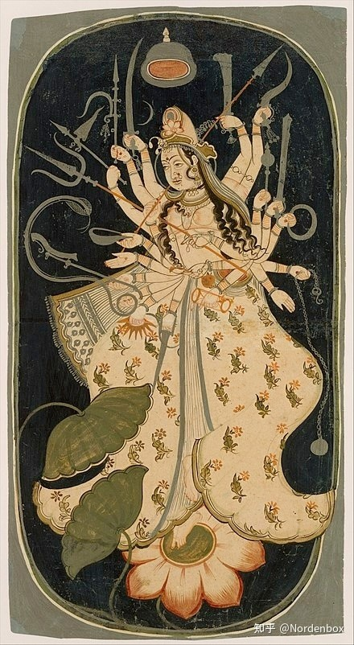
作为最大的女神，其地位相当于盖亚，也就是最初的女神。当然她也有其上游的神，但多半不再出现在印度教神话主流之中。
她当然有无数的化名或者化身（incarnation），分列如下：
湿婆教她被称为 Durga。当然这个名字在性力派中也存在。吡湿奴派叫吉祥天女Lakismi。这两派的化身也不少，但和性力派相比那是大巫见小巫。
Durga
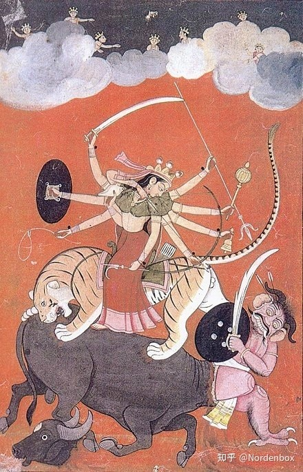
萨科提派（Shaktism）又称为性力派，她有好几个名字和化身。Tripura Sundari，bhuvaneswari，Kali等等。
Triura Sundari：游乐母，字面意思『三城中的美人』，她的宝座下方是梵天、毗湿奴、伊湿伐罗和鲁陀罗。她本人坐在湿婆身上。
实际上她是性力派对等雪山女神的形式。 也是很多地方都会被提到的名字。
Triura Sundari
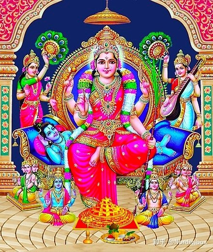
她还有一个名字叫 Sodasi，这个名字和她本人的名字 Sundari有相似之处，但呈现凶猛的造型。Sodasi，被称为『欲望之母』，the Mother of Desire。其颜色如初升的太阳，四个胳膊，她同时也是后面要提到的 恐怖毁灭大神Bhairava 的化身之一（男女互相转化）。乳房下垂，分泌着**，哺育有情万物。
Sodasi
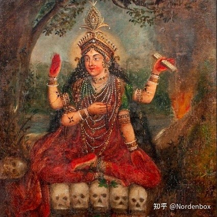
她下方的五个骷髅头分别是五个男性大神：梵天，吡湿奴，楼陀罗，因陀罗和Sadasiva（湿婆的早期名字和形式）。这基本上把现代印度教最高的三位大神和古代印度的最高双神一网打尽。
Lalita
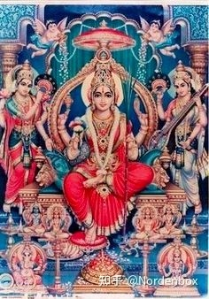
她古老的名字之一为 Lalita，她没有具体的形象，也过于古老。出现在各类赞美诗中，其中最著名的Lalita Sahasranama中，在这本书中，仔细描述了 Lalita 的容貌，但不见于各种造像艺术。
在坦特罗 典籍之中，这位女神被描述是 Mahadevi 十种形态（Mahavidyas）之首，坐在金色的须弥山（meru）山顶，围绕着她放射出几条大河，有盐水，蜜糖，果汁，酒，新鲜的酥油，牛奶。
《婆罗门往世书》对她的描写很细致。因为湿婆被爱神卡玛搞得心烦意乱，于是产生了一个恶魔叫班达（Bhanda），众神都束手无策。因为这个恶魔控制着财富，**。这实际象征性的指出人无法消灭的自己的欲望。就在危难的时候，宇宙之母 Lalita 出现了：
因陀罗将其余众神召集在一起，宣布：“班达的军队如此强大，我们无法独自击败他。我们将不得不挖一个一英里长的火坑，并用人祭来安抚女神。” 于是他们点燃了大火并献上了一个人的身体，同时他们念诵了对宇宙之母神圣的咒语。 一团炽热的光团在火光上实体化。光轮的中央坐着大女神，灿烂如初升的太阳。众神立刻认出了拉丽塔：她是整个宇宙的生命力，是美与欲的精髓，身着石榴色的长袍，对着他们微笑，眼神如月光般清冷。在她的四只手臂中，她拿着一个绞索、一根刺、一把甘蔗弓和五支花瓣尖的箭。
Baghavati 薄迦瓦蒂
Bhagavati（薄伽之女）
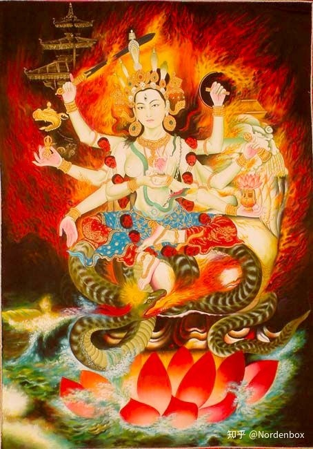
Bhaga 薄伽 梵语中的神的意思，阿底提（原初女神，但后期已经逐渐在神谱中消失）之子。Bhaga是古代伊朗语 Baga的转写，为古代的神灵，意思为Lord，巴格达的名字即来自于此。据说God一词的由来也是如此。
Bhuvaneshvari：字面意思为 宇宙女王
Bhuvaneshvari
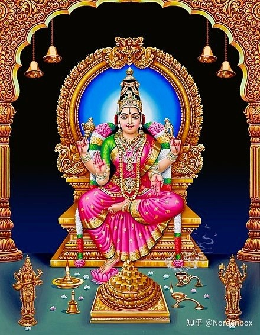
这个名字强调的为她在创世宇宙中物质的一面。
Durga：难近母，意思为难以接近。
Durga
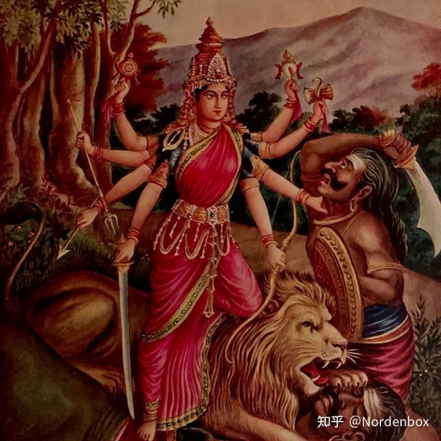
看得出来，难近母/杜尔迦（Durga），是一个降妖伏魔的女神。作用类似于各类护法神。可以看得出来，密宗佛教的护法神，实质上各类教外神祗的大融合。
在万神殿中地位急剧上升的杜尔迦自身又有不同的化身，所谓第二层级的化身。这些化身总称为九杜尔迦。当然她远远不止九个名字，据说有 108 个。随便列举几个：
1) Satī, the daughter of Dakṣa; 2) Sādhvī, the Sanguine; 3) Bhavaprītā, loved by the universe; 4) Bhavānī, the abode of the universe; 5) Bhavamocanī, the absolver of the universe; 6) Āryā; 7) Durgā; 8) Jayā; 9) Ādyā, the beginning reality; 10) Trinetrā, having three-eyes……
九杜尔迦 称为 Nava-Durga。虽然是九个，但是被视为单一的神灵。
九杜尔迦
九杜尔迦在Navaratri节被重点崇拜，而九岁以下的处女则会当做杜尔迦而受到到尊重。可见印度人对女神的崇拜有着很多近东和亚欧宗教的特点。
在藏传佛教中，杜尔迦（难近母）的名字叫 班丹拉姆 Palden Lhamo。此女神为藏传佛教最大的女护法神。同时也是拉萨的保护神。
班丹拉姆
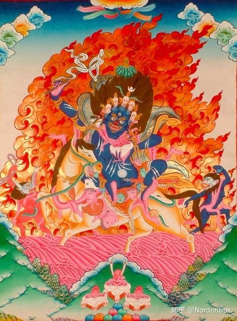
班丹拉姆也有无数的化身，也可以称为伴神。这些伴神与班丹拉姆一样，其造型与环境与下面要说的 Kali 女神一模一样，都是血盆大口，手持各种法器，血淋淋的。
性力派对大女神的崇拜中，还有一个重要的化身和名字，叫咖梨 Kali，字面意思是黑色。又被称为时母。这是一尊极其恐怖的女神。占据女神崇拜的核心位置。
时母/咖梨
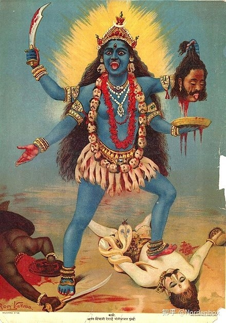
Kali 时母。Kali 有黑色的意思，也有时间的意思，这基本是一个吞噬了时间的女神。
Kali 女神有一个变体，叫 Mahakali，也就是大咖梨，之所以这么称呼是需要她做 Mahakala 的配偶。而 Mahakala （摩诃迦罗/大黑天）则是湿婆的化身。换句话说，Mahakala 湿婆的妻子雪山神女，这样 Kali 就等同于雪山神女。
Mahakala中的 Kala 又可以理解为 Yama，即阎魔。湿婆作为毁灭之神，做一下地狱之王完全不过分。
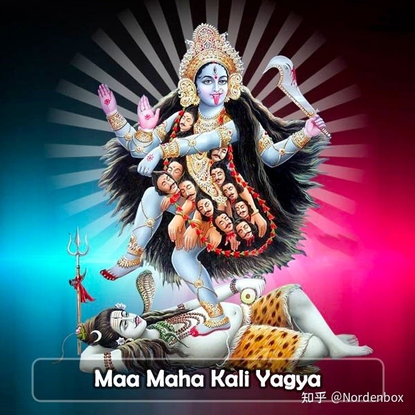
Kali 女神有一个相对温柔的形式，流行于孟加拉地区。名叫Dakshinakali。她是仁慈的母亲，保护她的奉献者和孩子免受不幸和不幸。没错，这就算比较温柔了，因为皮肤是正常的。
Dakshina kali
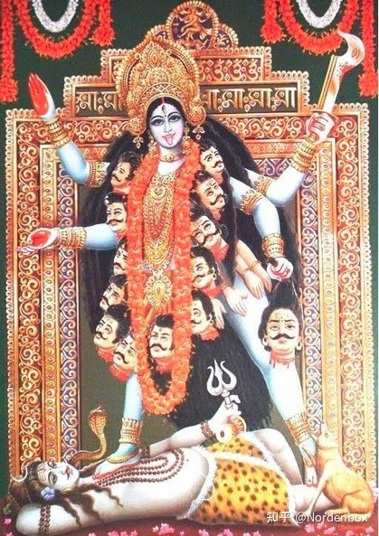
但 Kali 女神主要是恐怖的状态。是 Samashan Kali ，最危险的形态。Samashan 的梵语可以理解为『墓地』。
Smashan Kali
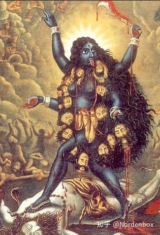
注意。Kali 以三种流行的形式描绘：四臂 Dakshina Kali、十臂 Mahakali 和 Smashan Kali。
Smashana Kali 是 Kali 最危险和最强大的形式。Smashana Kali 是密宗经文的首席女神。据说，如果Kali左脚走出，右手拿着剑，她就是Samshana Kali的形式。她是火葬场的女神，受到坦特罗密宗的崇拜。
坦特罗的修行者脑海里观想的 Kali 是 Smashan Kali，她坐在湿婆的身体上施法。这涉及到性力派最核心的教义。
Kali 女神是性力派的女神崇拜的核心，作为湿婆的主宰/伴侣，得到广泛的崇拜，光是孟加拉的别名就高达几十个。
比如：Adya kali、Chintamani Kali、Sparshamani Kali、Santati Kali、Siddhi Kali、Dakshina Kali、Bhadra Kali、Smashana Kali、Adharvana Bhadra Kali、Kamakala Kali、Guhya Kali、Hamsa Kali、Shyama Kali 和 Ka****nkarshini Kali。
孟加拉有专门的 Kali Puja 节。这里的 Puja 实际就是『供养』的意思。
Chandi 香缇
实际上，名字虽然香艳，但其字面意思就是『凶狠』。所以是一尊凶神。也被称为Chandika，印度教女神Shakti的恶魔毁灭形式，在印度东部（孟加拉）特别流行。她还有一个名字叫Mahamaya（大魔法）。
Chandi
这几乎是与 Samasha 并列的最凶狠的 Kali 女神形式，许多史诗都介绍她的战功，Chandi Patha是颂扬她如何与最强大的恶魔作战和摧毁。
在一些文献中，她被理解为 Heruka 的配偶，也就是被 Heruka 抱在怀中的女神。Heruka，梵语中可以理解为『空性』，但在藏语中国被翻译为『吸血者』。形象变得血腥。
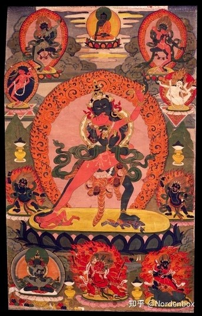
有的时候，Heruka 与大威德金刚 Yamatakan 并不能严格区分。但 Chandi 是相同的。注意一下大威德金刚与 Heruka 的关系，下面这个女神的讲述会再一次描述这个关系。
Tara
Tara，这也是 Mahadevi，或者 Kali 的另外一种变形。
Tara

Tara ，不仅仅是另外一个名字。Kali 是黑色的，但 Tara 是蓝色的皮肤，穿着虎皮裙。这两者有着一些微妙的区别。
Tara虽然和 Kali 很像，但她具有某种东方色彩。一般认为，她是东方金刚不动佛（阿閦如来）的配偶。在这里，配偶一词并非完全准确。印度东部的原始崇拜者把另外一个与湿婆很相似的大神 Bharirava 也引入到崇拜体系之中。
Bhairava
这个恐怖的大神，有着各种各样的变体，基本上各取所需。在佛教中，他被认为是大威德金刚。但这也不一定，因为他也可以被看做佛教中的其他恐怖男性神，比如 Heruka。前面说过，印度教与密宗对大护法神没有严格区分，因为有各种 Incarnation 的存在，逻辑上都能讲通。
而她的配偶就是 Tara。实际上，从前面对 Chandi 的描述中看得出来，在逻辑上，Chandi = Tara。严格说Tara 是 Bhairava 的配偶，而不是阿閦如来的配偶。
这个恐怖的 Bhairava 进入佛教体系之后，就变成了一个阿閦（音：处）如来，一个主管东方的『不动佛』。
阿閦如来
A-kṣobhya。这里，A 的梵语意思为『否定』。也就是"Un- moveable"-不动佛。为什么是东方呢？这里有原因。原因来自于 Tara。
在《女神薄迦梵往世书》中，Tara 居住在中国，也就是说 Cina，或者说东方。在这里，Tara 就和东方建立了联系，而在性力派女神占据主导地位看来，阿閦如来定居东方，恐怕是沾了 Tara 的光。
在书中，这个 Tara 被化身为前面提到的一个女神，Sundari，她的居住地是一个叫『大 Lasa』的地方，位于中国某个叫Mallari 的南部。我不得不联想到 拉萨，这个 Mallari 不知道是指哪里，也许就是拉萨的北部区域。
但文中提到的地名也包含了Yogeswari Varat，这相当于其所知并没有超出印度本土，估计是目前阿萨姆邦一带。毕竟编撰《往世书》的古代人，对地理的概念并不发达。（牛逼的读者可以自行观看和解读）
place named Vedâranya where the Sundarî Devî is residing; then the place named Ekâmvaram, and the place Bhuvanes'vara near Purusottama where I always dwell as Parâ S'akti Bhuvanes'varî. The famous place of Mahâlasâ, known in the south by the name Mallâri; the place of Yoges'varî Varât, and the widely known place of Nîla S'arasvatî in China. The excellent place of Bagalâ in Baidyanâth, the supreme place Manidvîpa of S'rîmatî Bhuvanes'varî where I always reside.
另外，Tara 有着一个汉语地区密宗佛教很熟悉的名字『度母』。显然，这是 Kali 进入密宗佛教之后的产物。
各种颜色的度母
Tara 拥有无数的分支，算二级分支，包含各种颜色的白度母，绿度母，蓝度母。但我认为这是因为印度教的绘画中，不同的 Kali 女神被绘制成不同的分身/化身所致。
其中蓝度母Ekajati是从绿度母的 Mandala 逃脱出来的女神，其本身被认为是 Tara 的原型化身，恐怖至极。所以我姑且认为蓝度母是最早的度母，后来出现了绿度母和白度母。
Ekajati 蓝度母
Ekajati
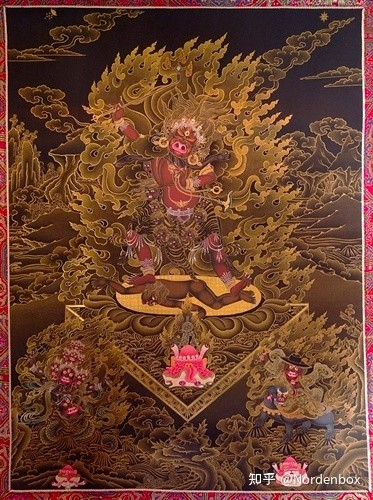
之所以说她是 Tara 的原型产物，是指她的造型，踩在湿婆尸体之上，手里有各种刀具和恐怖法器，最重要的是在他的发辫里面，编制了一个前面说的东方金刚不动佛的图像，更加彰显了她与 Tara 的关系。
Kali 女神对藏传佛教密宗的女性神祗产生强烈的映象，基本上密宗佛教中的大量女神都来自于性力派女神体系。比如 Kali 女神在藏传密宗叫Tröma Nagmo，。
Tröma Nagmo
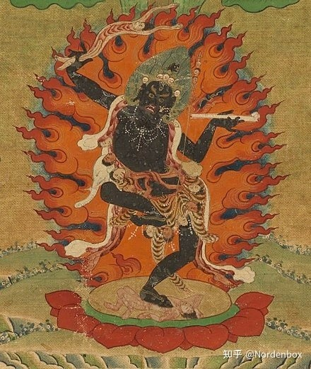
Tröma Nagmo，藏语将女性叫卓玛，所以这个词汇的藏语字面意思是黑色愤怒的卓玛。黑色这个词来自于 Kali，当无疑了。
Tröma Nagmo又被汉语使用者称呼为金刚瑜伽母。她的梵语形式为 Vajrayogini。注意和 Vajrahara 的关系。Vajrahara 即为金刚乘。Yoni 或者 yogini 是女性的泛指。
当然她还有一个名字：金刚亥母Vajravārāhī。
Vajrayogini
看得出来，她双脚踩在湿婆上，很多人把她脚下的人物理解为尸体，这样的理解是错误的。
她的角色在时轮金刚修行中是作为金刚乘灌顶的双修明妃存在的，基本等同坦特罗的传统。虽然她诞生的很晚，但实际上，从来源上看，她就是 Kali，她就是雪山神女。
她的随从值得关注一下，即空行母 Dakini ，荼枳尼。
Dakini
空行母
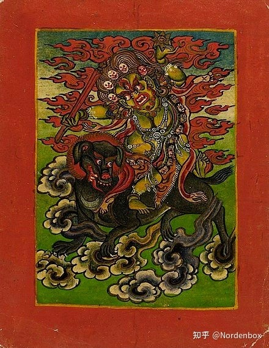
有些人将金刚乘密宗中的修行女性，或者明妃/修行女伴叫『空行母』，说到底有些错乱。按照往事书和奥义书的描述，她们为咖梨女神身边的食肉魔女，等级上属于 Kali 女神的下属。当然按照密宗的教义，次一级的佛母被称呼为空行母，似乎也可以说得通。
比如金刚亥母 Vajravārāhī 也被认为是空行母。
Dakini 的确有飞行的意思，汉语的翻译与藏语都是同样的意思。她是七种瑜伽女神之一。其他六个女神的名字都差不多。Kusumamalinī、Yakṣiṇī、Śaṅkhinī、Kākinī、Lākinī、Rākinī 。可见 ni 的词根为女性的梵语形式。
狮面空行母（Simhavaktra Dakini）
这也是空行母的一种，但属于后期被长期崇拜的对象。是密宗中的一位空行母，其特色是狮头人身，法身为般若佛母，报身为金刚亥母，而化身即是狮面空行母，她是宁玛派祖师莲华生大师的护法，也是噶举派祖师密勒日巴大师的护法。
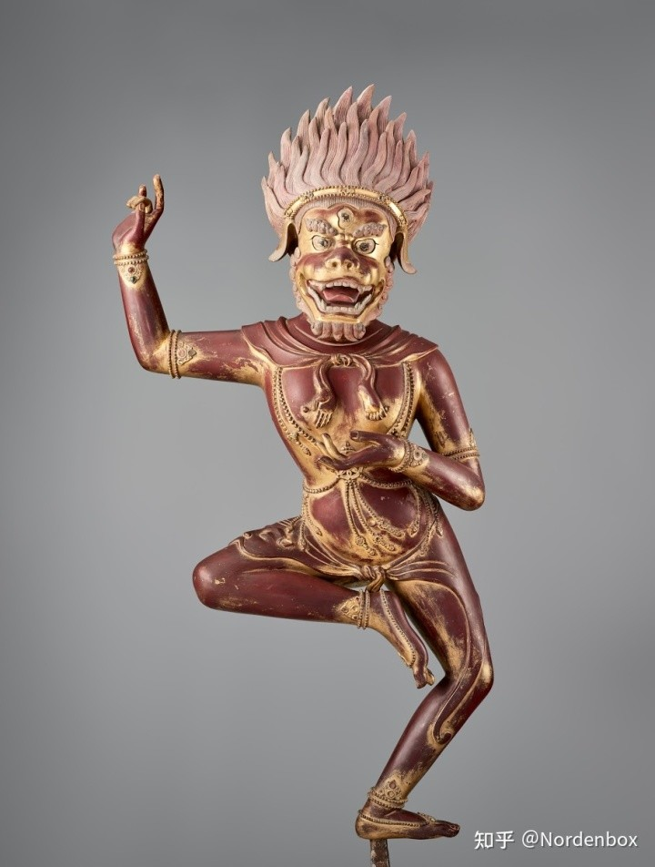
Chhinnamasta
这是雪山神女的另外一个凶恶的化身。最大的特点就是脑袋被砍掉。而 Chhinnamsta 的字面的意思就如此相关。『她的头被切断』
Chhinnamsta
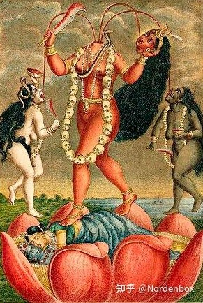
自斩头颅的主题在印度神话中反复出现。而且头颅被拿掉且自我救赎在别国的神话也反复出现。这是一个很重要的话题。一般说来就是头颅被砍下，但主体依然存活的状态。
Chinnamastra 出身在一朵在宇宙茫茫的空间中盛开的莲花之中。她自己割下了自己的头，颈部出来的鲜血进入自己的口中，同时也给遇到两边。这两个喝她血的也是两个十六岁的女性。右边这个叫 Barnini（孟加拉语：美丽），左边就是前面讲过的空行母（Dakaini）。
这个画面的象征意义就是女神通过牺牲自己去哺育整个世界。当然，她是可以自我循环的，因为一部分血液进入到她自己 口中。
注意观察，女神站在一对夫妻之上。这说明性力派认为，『性力』是创造这个世界的本源动力。下面这个相同主题也是如此，只不过女神是坐着。
Chinnamastra
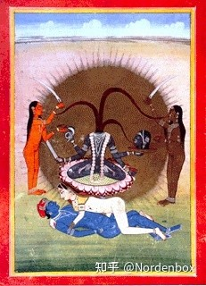
Dhumavati
这是一个非常类似于西方Cailleach的设定。在欧洲经常出现一些丧失性魅力的丑陋老妇人的神话设定。其原因在于既然女性是世界之源，那么女性特征的丧失，那也意味着世界的终结。
关于 Kali 和雪山神女，上述的所有，还有没有讲述到的形式，都可以归结为 Mahavidya，即所谓的 Mahadevi 的十种形式。
Shada Mahavidya 十种形式
Kali、Tara、Tripura Sundari、Bhuvaneshvari、Chhinnamasta、Bhairavi、Dhumavati、Bagalamukhi、Matangi和Kamala。
以上所有这些性力派的女神都与一个元素有关：尸陀林。
Śītavana 尸陀林
尸陀林的字面意思为寒林，是一个汉语词汇中可以感知到修辞与意境的翻译。但本源来自于印度的露天火葬场 Samasana（Graveyard）。在印度的苦行时代，也就是古代印度，一群修行者通常聚集在火葬场进行苦修，因为那里被认为是最可怕的地方，在那里修行会得到很好的修为。
而在 Tantra 坦特罗信仰体系中，Samasana 被认为是穿越生死的重要修道场，前面提到的 Kali，Tara ，Samashan Kali和许许多多 Mahadevi 体系的女神，均在坦特罗的教义中出现在火葬场。
对火葬的崇拜来自于古代吠陀时代。我们重新观看 Tara 的这幅图像：
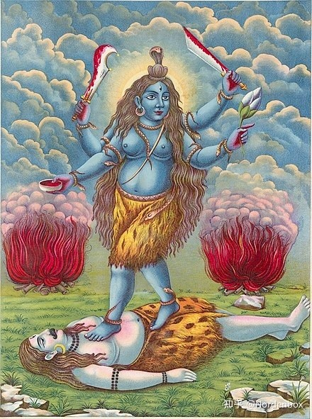
注意 Tara 两侧的火堆，在吠陀经典和奥义书中，Pyre （柴堆）在冥想环节被赋予了深深意义，火焰与烟尘，被看做可以通向天神和神界的媒介。而奥义书中更是长篇累牍的描述如何在祭祀（Puja）活动中安放火堆。
在坟场和葬场，布满了尸体，充满恐怖气氛。而死者的恐怖，会让你产生世事无常的有力暗示，也促成了性力派对这种地方的重视。在性力派看来，在尸体上进行『initation』（灌顶）是最有效的。如前所述，在坦特罗造像艺术中，女神Kali，Tara 和 Chandi 的形态都是在葬场，手持各类法器。
至于尸陀林的主人，一般认为是 Heruka。
Paravati
Pārvatī 雪山神女，字面意思就是：山的女儿。
所有这些都联系到雪山神女，那么我们就暂时离开性力派，到达湿婆教义，谈谈雪山神女。
雪山神女
离开性力派的恐怖，湿婆派的 Mahadevi 就显得慈眉善目了。她的前身是萨蒂，所以萨蒂和雪山神女就是同一个人。都作为爱情的象征存在，主要议题在于歌颂爱情。
雪山神女虽然是摩诃提毗的化身，但摩诃提毗的化身自身并非都是同一个人。
Sarawati 萨拉瓦蒂 辩才天女
Sarawati
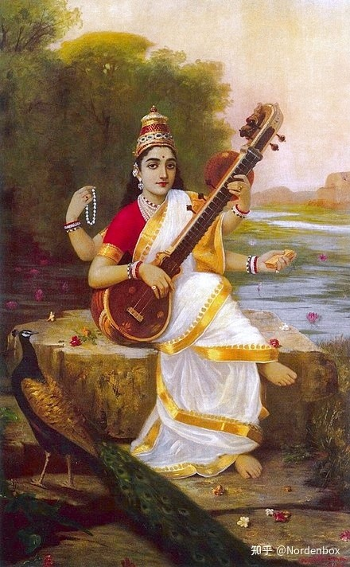
Sarawati 的字面意思可以理解为『水汇集的她』，估计有河神的前身。她是梨俱吠陀时代就有的古老神祗，也拥有智慧女神和音乐女神的含义。后期将她和 Mahadevi 联系起来，认可了两者的联系。
有的时候，她被认为是梵天的妻子，目的只是为了配对。因为神学体系有冲突，但印度教并不在乎这个。
在佛教中，她被称呼为辩才天女。据说她非常擅长于辩论。但早期佛教应该不会如此重视女性身份，很有可能因为印度教的智慧女神的设定，影响到了佛教的理解。
据说她的来源是伊朗，属于外来的古老神祗。
古代伊朗的大女神叫 Anahiti，意思是『pure』，英语 annihilate，词根为 anihilo，意思是『去除到干干净净』，连着存在着某种显著关系，但也可能什么也没有。
流传到梨俱吠陀中就是 Sarawati， 因为伊朗的贵族来自于美索不达米亚，所以这里很自然的就将 Anahiti 与美索不达米亚的大女神 Istar 建立了联系。ishtar 的别名或者原始叫伊南娜，实际上我认为这是性力派所崇拜的女神的真正来源，她是苏美尔人崇拜的与性有关的大女神。
Innana/Ishtar
Laksmi 吉祥天女
从现在开始，Kali 也好，Durga 也好，Parvati 也好，都是与湿婆联系在一起。而 Laksmi则属于毗湿奴。她被认为是毗湿奴的妻子。
既然是毗湿奴的妻子，则她也可以被称之为 Vaishnavi，毗湿娜毗。或者使用毗湿奴另外一个名字那罗延的妻子：Narayani。
Laksmi
而对于性力派看来，Laksmi 不是从属地位，而是吡湿奴的主人。她被认为是红色萨克提（ Red Shakti），
Red Shakti
以上的 Parvati，Sarawati，Laksmi 被称之为三女神 Tri-devi，因为他们分别是梵天，湿婆与吡湿奴的妻子。但无论如何，她们都是 Mahadevi 的分身。
就如同雪山神女与湿婆之间轰轰烈烈的爱情传奇一般，吡湿奴的妻子自然也有相应的强度。她也有无数的分身和化身。
Radha
拉达，就是极度让人着迷与神往的人物，这几乎不是一个神话，而是一个真实的人间女孩的设定。 她被认为是吉祥天女的化身。
Radha 也被认为是人类精神的隐喻，她对 Krishna 的爱和渴望在神学上被视为人类追求精神成长和神（婆罗门）结合的象征。她启发了许多文学作品。
Radha
克里希那（吡湿奴的化身）与拉达的爱情故事催生出无数诗篇与作品，其中最著名的叫《牧童歌》Gita Govinda。故事发生在一个叫 Vrindvan 的地方，在这里，少年吡湿奴，即克里希那遇到了拉达，两人陷入疯狂的爱情。但故事的主旨在于各种肉感和情欲的表达，表现出极度俗世的氛围。
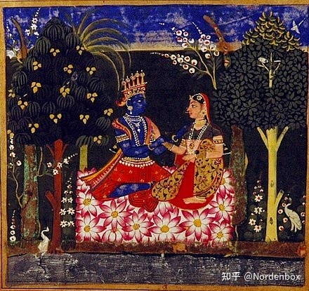
不仅仅是文学，由此催生出著名的舞蹈Rasalia。这是印度最著名的舞蹈固定节目。
Rasalia
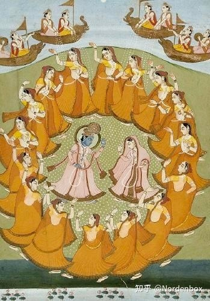
Radha 与 Krishna 的故事几乎是印度最浪漫的爱情故事，由此，Radha 的化名和分身高达一千多个，这里没有必要一一列举。其中比较容易联想到是Keshavi，Trilokya Sundari。而后者则很像最早提到的Triura Sundari：游乐母的名字，意思是『三个城市中最美的女孩』。
她并没有成为吡湿奴的妻子，而是另嫁他人，但是她的灵魂与吡湿奴已经永远在一起。她是吡湿奴派的主要女神。也是印度教中最美丽的传说。
Brindaban
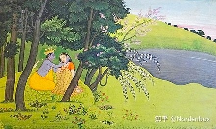
但无论如何，从神学架构上，Radha 是 Mahadevi 的化身。所以无论如何，在 Mahadevi 的万神殿中，始终只有一个神，就是原质之神。